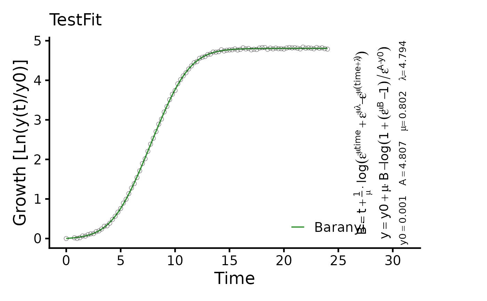

Plot the results of a parametric model fit on growth vs. time data
Usage
# S3 method for class 'gcFitModel'
plot(
x,
raw = TRUE,
pch = 1,
colData = 1,
equation = TRUE,
eq.size = 1,
colModel = "forestgreen",
basesize = 16,
cex.point = 2,
lwd = 0.7,
x.lim = NULL,
y.lim = NULL,
n.ybreaks = 6,
plot = TRUE,
export = FALSE,
height = 6,
width = 8,
out.dir = NULL,
...
)Arguments
- x
A
gcFittedModelobject created withgrowth.gcFitModelor stored within agrofitorgcFitobject created withgrowth.workfloworgrowth.gcFit, respectively.- raw
(Logical) Show the raw data within the plot (
TRUE) or not (FALSE).- pch
(Numeric) Symbol used to plot data points.
- colData
(Numeric or Character) Color used to plot the raw data.
- equation
(Logical) Show the equation of the fitted model within the plot (
TRUE) or not (FALSE).- eq.size
(Numeric) Provide a value to scale the size of the displayed equation.
- colModel
(Numeric or Character) Color used to plot the fitted model.
- basesize
(Numeric) Base font size.
- cex.point
(Numeric) Size of the raw data points.
- lwd
(Numeric) Spline line width.
- x.lim
(Numeric vector with two elements) Optional: Provide the lower (
l) and upper (u) bounds on the x-axis as a vector in the formc(l, u). If only the lower or upper bound should be fixed, providec(l, NA)orc(NA, u), respectively.- y.lim
(Numeric vector with two elements) Optional: Provide the lower (
l) and upper (u) bounds on y-axis of the growth curve plot as a vector in the formc(l, u). If only the lower or upper bound should be fixed, providec(l, NA)orc(NA, u), respectively.- n.ybreaks
(Numeric) Number of breaks on the y-axis. The breaks are generated using
scales::pretty_breaks. Thus, the final number of breaks can deviate from the user input.- plot
(Logical) Show the generated plot in the
Plotspane (TRUE) or not (FALSE). IfFALSE, a ggplot object is returned.- export
(Logical) Export the generated plot as PDF and PNG files (
TRUE) or not (FALSE).- height
(Numeric) Height of the exported image in inches.
- width
(Numeric) Width of the exported image in inches.
- out.dir
(Character) Name or path to a folder in which the exported files are stored. If
NULL, a "Plots" folder is created in the current working directory to store the files in.- ...
Further arguments to refine the generated
ggplot2plot.
Examples
# Create random growth dataset
rnd.dataset <- rdm.data(d = 35, mu = 0.8, A = 5, label = "Test1")
# Extract time and growth data for single sample
time <- rnd.dataset$time[1,]
data <- rnd.dataset$data[1,-(1:3)] # Remove identifier columns
# Perform parametric fit
TestFit <- growth.gcFitModel(time, data, gcID = "TestFit",
control = growth.control(fit.opt = "m"))
#> --> Try to fit model logistic
#> ....... OK
#> --> Try to fit model richards
#> ....... OK
#> --> Try to fit model gompertz
#> ....... OK
#> --> Try to fit model gompertz.exp
#> ... ERROR in nls(). For further information see help(growth.gcFitModel)
#> --> Try to fit model huang
#> .......... OK
#> --> Try to fit model baranyi
#> ........ OK
#>
#> Best fitting model: ~baranyi
plot(TestFit, basesize = 18, eq.size = 1.5)
#> Scale for y is already present.
#> Adding another scale for y, which will replace the existing scale.
#> Scale for colour is already present.
#> Adding another scale for colour, which will replace the existing scale.
